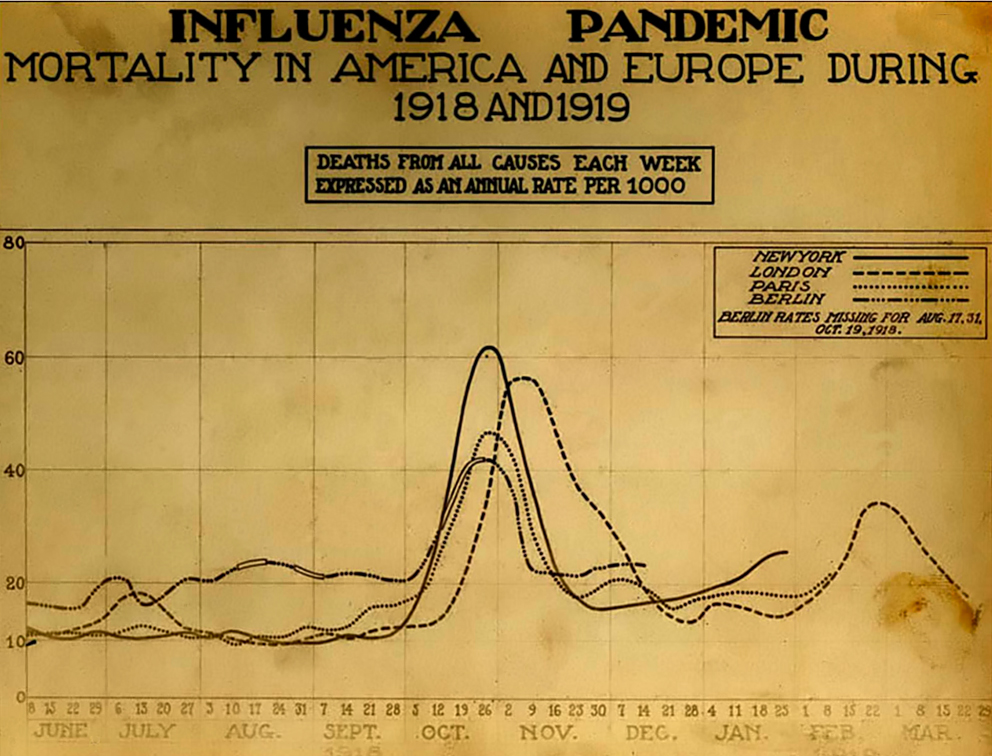
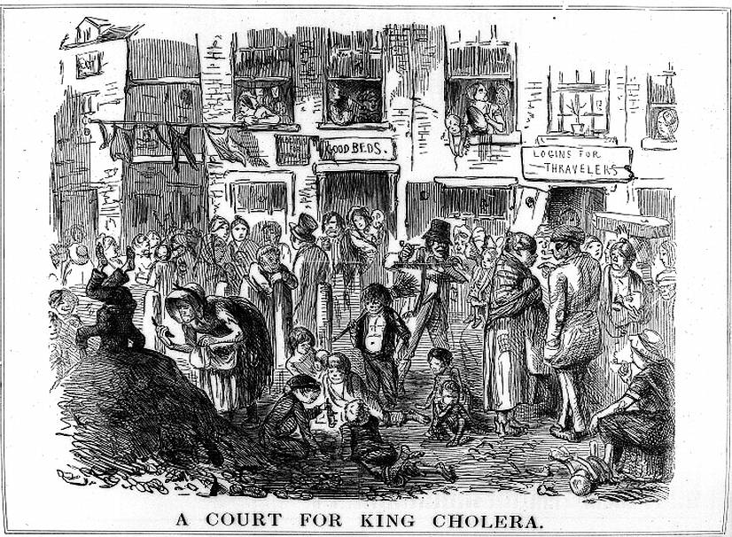
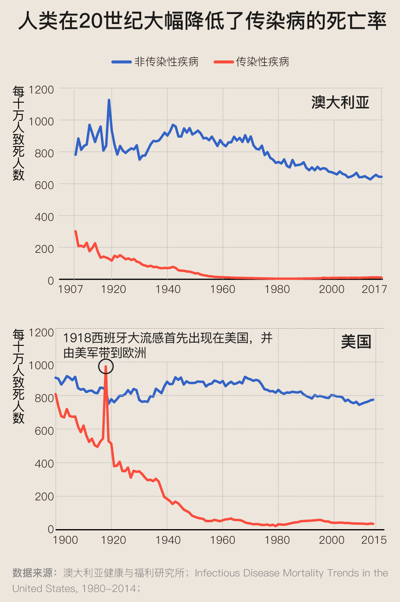
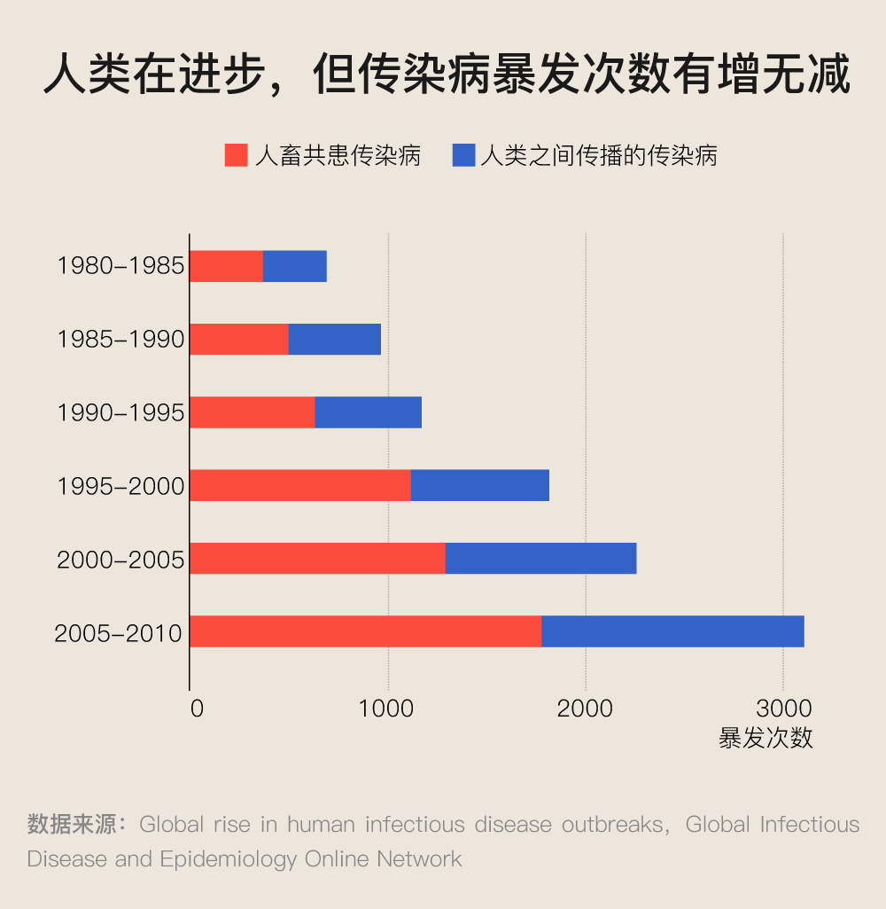

图释两千年传染病史：若瘟疫无法被根除，该如何与之相处？
武汉封城四周有余，数字变得漂亮了起来。尤其在非湖北地区，每日新增确诊病例已呈下行趋势，出院人数也已远超死亡人数。胜利仿佛近在咫尺。
有人开始摘掉口罩，拓宽有限的活动区域，但这股活泼劲儿很快遭到了病毒的回击。
即便进入了21世纪的第二十个年头，不少人还迷恋着“人定胜天”的理念，认为拥有现代医学的盔甲，终止传染病的侵害只是时间问题。事实真是如此吗？
这不是一个着眼当下即可解答的问题。我们还需弄清：为何天花仍是唯一被根除的人类传染病？如果将人类和传染病视为战争中的敌我双方，那么我们应该如何看待那些在其中丧生的个体，且如何定义胜利？以人类中心主义的视角来解读人与致病微生物的关系，是否合理？
只有认真审视几千年的人类传染病史，我们才能找到答案。
传染病：如影随形的历史洗牌者
对传染病在人类发展史中扮演的角色，威廉·H·麦克尼尔在《瘟疫与人》一书中曾这样写道：“先于初民就业已存在的传染病，将会与人类始终同在，并一如既往，仍将是影响人类历史的基本参数和决定因素之一。”
将1世纪以来信息记载较为全面的瘟疫一一列出，传染病的难缠及威力即可一目了然。
以如今的视角审视历史的走向，无论是被斯巴达打败而丧失领导地位的古雅典、在哥伦布发现新大陆后近乎灭绝的美洲原住民，或是曾作为古人类发祥地之一但在现代文明中处于落后地位的非洲，传染病均曾通过大量削减人口的方式在其文明演变中引发过连环效应。
中国也自然逃不过。根据美国昆西大学远东史教授约瑟夫·H·查依照《资治通鉴》和《古今图书集成》整理的中国的疫情年表，从汉朝至清朝的两千年间，大范围暴发的瘟疫就达288次，它们有时会造成“十死六七”的后果。
尽管谁都无法忽视传染病的威力，但在很长一段历史时期，尤其是在17世纪显微镜问世之前，由于对手的不可见，人类对传染病究竟是什么、为何发生以及如何发生存在着巨大的认知空白。
因而也能解释，早期疫情为何总被模糊化地命名为“XX瘟疫”，原因是当时的人们大多并不知晓发生的是何种传染病。如今我们之所以可以对其中的一些瘟疫进行归类，大多是通过查看古籍中的病情描述以及传染病在人类尸骨上遗留的残痕得出判断的。
而那些出现在瘟疫命名中的地名，比如“墨西哥大瘟疫”、“伦敦大瘟疫”，一方面可用于解释在实现全球化前，传染病在地理上传播的局限性，另一方面也透露出了人类对疾病的避讳。
比如导致至少5000万人丧生的“西班牙大流感”，最初其实发端于美国，并随美军1918年登陆法国而扩散开来。但当时的交战国为了不打击士气，对疫情报道进行了压制，许多重要信息主要从中立国西班牙流出，于是西班牙的国名因此颇为讽刺地与这场大瘟疫连在了一起。
这张曲线图呈现的是1918年6月至1919年3月纽约、伦敦、巴黎和柏林死亡人数的变化，单位：每千人。图片来自：National Museum of Health and Medicine
在现代科学诞生前，就像应对其他不可知事物时所采取的办法一样，人们一边诉诸神明与宗教驱逐对传染病的恐惧，一边从日积月累的经验中习得应对方法并试图建立对传染病的认知。
在现代科学诞生前，就像应对其他不可知事物时所采取的办法一样，人们一边诉诸神明与宗教驱逐对传染病的恐惧，一边从日积月累的经验中习得应对方法并试图建立对传染病的认知。
我们如今所熟悉且仍在使用的隔离手段和检疫制度，在中世纪就已出现。当时的一些医学家已认识到传染病的传染特性，观察到与黑死病患者的衣物、食器接触会导致发病。除了建立隔离所，这一发现后来还被用在了瘟疫医生（中世纪时期专门负责治疗黑死病患者的医师）的服饰设计上。
《罗马的鸟嘴医生》（Doktor Schnabel von Rom），Paul Fürst创作于1656年。图片来自：Wikipedia
用多层布料编织、外层涂蜡的长袍，像鸟啄一样凸起、在眼睛处装有透明玻璃的面具，以及用于检查患者状况的木制指示棒，均可避免瘟疫医生直接接触患者和尸体的皮肤、血液和飞沫。当时人们并不知晓鼠疫杆菌的存在，以为黑死病是由瘴气（有毒的空气）诱发的，于是在面具的鸟啄处，还填入了散发芳香、被认为具有驱逐瘴气功效的樟脑、丁香、玫瑰花瓣等物质。
但对传染病的认知局限，也常会导致一些看起来科学的应对方法失灵。比如由于人类并非鼠疫杆菌的唯一宿主，作用于病患的隔离所和检疫制度并无法阻挡老鼠和跳蚤的脚步，因而也无法完全中断鼠疫的传播。而那些着装专业的瘟疫医生，大多由未受过专业训练或缺乏临床经验的外科医师出任，有时他们采用的错误疗法不仅不能救人于水火，可能还会置人于死地。
现代医学诞生后，人类一度以为传染病是可被根除的
至今传颂不衰的那些经典抗疫案例，基本都是在现代医学逐渐成型后诞生的。英国内科医生约翰·斯诺绘制霍乱地图的故事是其中最著名的一个。
1854年，一场严重的霍乱传染事件在英国伦敦的苏豪区暴发。当时的医学界信奉瘴气说，认为霍乱和黑死病一样，是由有毒的“坏空气”引起的。而当时人口密度最高的伦敦还未铺设排污管道，这些“坏空气”就随着排泄物在地下室的堆积飘散至城市中，将整个伦敦弄得臭气熏天。
《霍乱国王的法院》（A Court for King Cholera），John Leech创作于1852年，折射出了当时人们的认知：霍乱与肮脏紧密关联。图片来自：Wellcome library
但斯诺对瘴气说心存质疑，通过走访霍乱患者的居所、了解其生活细节并将他们的居住地在地图上一一标出后，他发现霍乱感染案例均是以水泵为中心分布的。
在霍乱患者最为集中的宽街，他还发现了一个异常现象，在该地雄狮酿酒厂上班的工人们没有一人患病。后来他得知由于工人们被允许饮用工厂的啤酒，所以他们均未喝过宽街水井中的水。
尽管当时细菌学理论尚未建立，斯诺也并不知晓污水中滋生着霍乱弧菌，但通过可靠的统计数据和清晰的可视化图表，他最终推断出霍乱的暴发是由被污染的饮用水引起的，并说服苏豪区政府移除了水泵阀。而他的研究也被视作流行病学的发端。
《斯诺地图》（第二版），这一版新增了一圈边缘不规则的范围线，用来框定常去受污染水井打水的居民居住的范围，而该区域也与霍乱患者的居所在空间上的分布形态高度重合。若霍乱由气体引发，其致病范围应呈圆状，而不会和饮用被污井水居民的居住范围如此接近。第二版地图在斯诺说服苏豪区管理部门时发挥了关键作用。图例为本文作者添加，范围线为了更加显眼进行了重描。原图来自：The John Snow Archive and Research Companion
“霍乱地图”诞生的当年，意大利解剖学家菲利波·帕奇尼（Filippo Pacini）分离出了霍乱的病原体霍乱弧菌。1894年，法国细菌学家亚历山大·耶尔森发现了引发鼠疫的鼠疫杆菌。1928年，英国生物学家亚历山大·弗莱明发现了具有杀菌作用的青霉菌，十年后，牛津大学的钱恩、弗洛里及希特利团队又从中提炼出第一种抗生素青霉素，让人类拥有了杀死细菌的利器。
随着解剖学、生理学、细胞学、细菌学和临床医学等领域不断进步，许多困扰人类上千年的难题得到了解答。20世纪后，加上疫苗的逐渐普及和公共卫生水平的进一步提高，传染病致死率出现了大幅下降。
1979年，世界卫生组织宣布天花被正式根除。这种直至20世纪60年代仍在亚洲和非洲肆虐的疾病，成为了第一个被人类完全消灭的传染病。
虽然英国医生爱德华·琴纳早在1796年就发明了天花疫苗，但疫苗在热带地区效果并不佳，因为炎热气候会使疫苗迅速失效，直到1950年代初，英国科学家莱斯利·科利尔找到了一种生产热稳定疫苗的方法，天花疫苗才真正在全球推广开来。
数据来源：WHO
但上述丰功伟绩的实现，并没有前文叙说的那么一帆风顺。其中的阻力，有时来自对传统观念的固守，有时由政府的不作为而生，有时还源于民众因缺乏医学知识和对自然的敬畏犯下的种种过错。
如今备受赞誉的约翰·斯诺，直至去世，其水传播理论也未得到学界的认同，当时的《柳叶刀》杂志写满了对他的批评。
即便在霍乱弧菌被发现后，不少博学的医学家依旧坚守瘴气说。19世纪接近尾声时，一位著名的德国医生还因此吞下过一杯滋生霍乱弧菌的水，并告诉同行自己没有不良反应，以此证明病菌理论不足为信。
而在斯诺时期即已启动的城市供水系统改造计划，其推行者也不认同水传播理论，而只想借此去除城市中的臭味。加上整项工程耗时且昂贵，一些暂未受到霍乱威胁的欧洲大城市，比如德国汉堡，心存侥幸地将改造计划一推再推，直至1892年霍乱在该市暴发，改造行动才得以启动。
科学家捏着鼻子向泰晤士之父递上一张白卡纸，让他亲身了解一下泰晤士河水质。该漫画反映的是当时没有排污管道的伦敦，污水积在泰晤士河而出现的大恶臭事件。图片来源：Wikipedia
科学发现虽可以救命，但置身于世俗生活中的人们总习惯忽视它。1910年中国东北暴发严重的鼠疫，病原体鼠疫杆菌已于几年前的香港鼠疫中被发现，主持抗疫的伍连德博士通过切断东北通往关内的铁路、划分疫区和非疫区以及要求全民佩戴口罩等手段，很快稳住了疫情。但对于这场瘟疫的诱因——为追逐利益大量捕杀土拨鼠的皮毛，并食用剥皮后的动物尸体——直至今日仍未根除。
这几段往事，并不为大多数人知晓。遗忘是人类的本性，尤其在瘟疫过后、幸福生活重新到来之时，人们总会选择性地记下那些“胜利”的故事。
但因同类的愚昧、迟疑和贪婪所导致的种种过失，最终丧生于瘟疫的人呢？这些胜利的故事仍属于他们吗？我们未能在翻阅的史料中找到这个问题的答案。
人类在进步，传染病也在进化
消灭天花的成就将人类的野心放大到了极致：20 世纪下半叶，专家们提出了一个在当时看来相当可行的目标——把威胁人类的传染病从地球上清除出去。
但时至今日，天花仍是唯一被人类克服的传染病。
与此同时，人类查找病原体的技能虽日益娴熟，传染病的暴发次数却有增无减。
根据科学家们的监测，如今暴发的传染病，过半属于人畜共患型。这类疾病之所以可以经由其他动物传染人类，和我们长期侵占动物栖息地、驯养家禽与宠物、猎食野生动物等过程中与动物发生密切接触有关。
而在所有新型传染病中，人畜共患疾病的占比高达75%，其中包括非典和新冠肺炎。人畜共患型传染病值得警惕，是因为依据过往的经验，当一种新病毒首次潜入人体，由于缺乏对应的抗体，人类总会损伤惨重。从自保的角度看，这也是我们应杜绝野味的原因。
另一个不乐观的事实是，传染病来袭时，一些让人引以为豪的成就会转为劣势。
比如全球化虽满足了人类政治、经济、文化交流与发展的需求，但日益频繁的人口流动同时也成了传染病迅速扩散的便车。
这早已不是新知。回顾全球疫情史，每一次人类活动版图的拓宽，都曾扩大传染病的传播范围
大航海时代，天花跟随欧洲人的船只打开了更多的港口；工业革命后城市人口疯涨，被圈限于恒河的霍乱开启了多次全球旅行；一战中，西班牙流感跟随美军登陆欧洲，又由各国军人带至全球；1960年之前早已存在的艾滋病会闻名于世，也与全球化紧密相关。
如今，新冠肺炎的暴发是历史的又一次重演，只是其扩散速度更快了。
Sars传播
Covid-19传播
数据来源：WHO；央视新闻
尽管如今我们均已知晓传染病是由细菌、病毒、衣原体等致病性微生物引发的，但对这些病原体的科学性观察也不过开始于最近的400年内。
我们放大了克服天花的成就，却忽略了隐藏其后的那丝侥幸，即天花病毒有一个致命弱点，其唯一的宿主是人类，因而只要发明出对其奏效的疫苗并为全人类接种，它即会因无法找到栖身之处而灭亡。
但对于人畜共患型传染病，我们并没有找到根除它们的方法。比如埃博拉，虽能得到暂时的平息，但潜藏于丛林的病毒总会找机会重返人群。
抗药性病菌和新型病毒的出现还昭示着，拥有强烈生存意志的病原体们才是大多数，人类在进步，它们也在进化，这些微生物和我们一样通晓物竞天择的道理。
但所幸，真正致命的病原体们只占很小的比例，它们并不见得想要杀死人类，因为只有让宿主继续存活，它们才能继续繁衍和传播。
以最令人类头疼的病毒为例。“致死率超过10%的病毒其实很少见。大多数病毒的致死率相比起来低太多了……我认为病毒其实并不想杀死我们。它们在我们的体内复制，我们要是突然死掉，对它们也没好处，那样它们就无法传染下一个人了。”在BBC纪录片《病毒为什么致命》中，英国病毒学家John Oxford解释道。
*新冠病毒肺炎的致死率为粗病死率，所分析的数据是截至2020年2月11日中国内地传染病报告信息系统中上报的72314例患者病例；基本传染数R0所分析的数据是截至2020年1月26日中国内地传染病报告信息系统中上报的8866例患者病例。
数据来源：Centers for Disease Control and Prevention；WHO；CIDRAP；新型冠状病毒肺炎流行病学特征分析；Epidemiological and clinical features of the 2019 novel coronavirus outbreak in China
尽管如今我们均已知晓传染病是由细菌、病毒、衣原体等致病性微生物引发的，但对这些病原体的科学性观察也不过开始于最近的400年内。
进入20世纪后，人类才首次发现病毒。随着研究的深入，我们逐渐获知，这种微生物很可能在生物开始进化时就已诞生，并在生物进化的过程中扮演了不可忽视的角色。在孕育出大量生命体的海洋中，它们才是真正的主宰者，通过杀死其中的一部分生命物质并释放内容物供给其他生物体，海洋生态系统的运转才得以维系。
“它们是这个星球上所有生态系统的重要部分，如果没有病毒，我们将很难想象世界像今天这样运作。”Mark Young在BBC纪录片《病毒为什么致命》中感叹道。在他看来，人类和病毒是“共同进化的共同体”。
如今的科学界已开始重新审视病毒与人类的“共生”关系，同时也不时发出提醒，尽管大多数传染性强的病毒致死率较低，但没人能保证未来是否会出现能杀死几百万人的病毒，为此，我们需做足准备。
毕竟，病原体的生存逻辑并非以人类为中心，而我们对这些存活了上亿年的微小生物，仍存在巨大的认知空白。
从2003年非典突发，到后来只感染禽类的禽流感（H5N1）传染上人类、致死率超过30%的中东呼吸综合征冠状病毒（MERS）冒头，再到这次新冠肺炎的出现，目前为我们所识别的能感染人类的冠状病毒只有七种。
这些病毒在人群中的作用力都不尽相同，目前来看，新型冠状病毒或许是极其狡猾的一个。中国医学科学院院长王辰在2月19日接受央视采访时表示“新冠肺炎有可能转成慢性疾病”。
与此同时，我们仍在重复许多过去的错误。与清朝末年东北鼠疫中的部分民众一样，我们不仅未戒除野味，而且依旧在学习如何正确地佩戴口罩。

1911年，哈尔滨鼠疫暴发，停业的客栈、学校等被用来当作防疫的办公室、消毒室和病房。图片来自：北京青年报
伍连德在回忆录中记下的一些滑稽场景也能与今日两相映照：“在大街上几乎人人都戴上了这样或那样的口罩”，但“有的人把口罩松弛的挂于耳上；有人套于颈上，犹如护身符，而正应刻意保护的鼻孔和口腔却依旧暴露在外。”
而真相是最好的疫苗仍未深入人心，谣言依旧比真相跑得更快。
我们所身处的2020年，是被过往无数科幻故事所畅想过的“未来”。与前人的描绘不同，我们未能移民火星，依旧在地球上开着无法飞翔的汽车，并且正被一场未曾被写入人类蓝图的传染病击中。
2015年，比尔·盖茨在接受VOX专访时，表达过对大瘟疫吞噬全球的忧虑。这种忧虑也曾被科学界多次提及，但相比为一场尚未到来的全球性传染病做准备，我们显然有太多更要紧的事要操心。
还记得文章开头威廉·H·麦克尼尔对传染病的警示吗：“技能、知识和组织都会改变，但人类面对疫病的脆弱，则是不可改变的。先于初民就业已存在的传染病，将会与人类始终同在，并一如既往，仍将是影响人类历史的基本参数和决定因素之一。”
致病性微生物的生死无法由人类定夺，因而传染病也将始终与我们相随。
但如果珍视生命的活力与价值，那么这一次，无论如何都到我们重审自身的时候了。
参考资料
1.《瘟疫与人》，威廉·H·麦克尼尔 著
2.《大流感——最致命的瘟疫史诗》，约翰·M·巴里 著
3.《病毒来袭：如何应对下一场流行病的暴发》，内森·沃尔夫 著
4.《鼠疫斗士——伍连德自述》（上），伍连德 著
5.《死亡地图——伦敦瘟疫如何重塑今天的城市和世界》，史蒂芬·约翰逊 著
6.《疫苗的史诗：从天花之猖到疫苗之殇》，让-弗朗索瓦·萨吕佐 著
7.《逼近的瘟疫》，劳里·加勒特 著
8.《第四级病毒：一对病毒学家与致命病毒的战争》，约瑟夫·麦克科密克&苏珊·费希尔-霍克 著
9.Epidemics And Pandemics: Their Impacts On Human History，Jo Hays 著
10.Vox-The most predictable disaster in the history of the human race
11.世界卫生组织-《世卫组织为根除天花三十周年纪念雕塑揭幕》
13.BBC纪录片-《病毒为何致命》（Why Do Viruses Kill）
14.Netflix纪录片-《下一波流感》（The Next Pandemic）